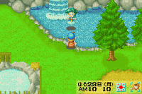
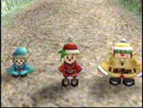

Para ter um pequeno bonus de itens de Friends of Mineral Town, voce vai precisar fazera ligacao do jogo com o"Wonderful Life" do Gamecube. Quando os dois jogos estao conectados, a informacao e passada entre eles e tem algumas mudancas de poucas coisas nos dois jogos.
Para conectar voce vai precisar de...
 O video game do Game/console do Game Boy Advance
O video game do Game/console do Game Boy Advance
O console do GameCube, controlador e memory card/cartao de memoria
Gameboy/GameCube Cabo Link/Link Cable
Uma copia de Friends of Mineral Town
Uma copia de "A Wonderful Life"
|  Para comecar, inicie ambos os jogos (e claro) e entao siga para a deusa do jogo do GBA Mineral Town no lago do "Mother's Hill". Voce tera que trazer algo e jogar no lago para fazer ela aparecer. Quando ela perguntar se voce gostaria de conectar, seleciona "Sim/Yes" e entao pare e espere o proximo prompt. |
 Em "A Wonderful Life", corra para o lado leste do mapa e comece seguindo para o caminho da montanha. Nik, Nack e Flack vai conversar com voce do morro e dira que voce nao pode ir alem deste camino ao menos se conectar ao Friends of Mineral Town. Conte a eles que quer conectar e entao depois de ler as instrucoes, eles irao confimar sua conexao. |
Neste ponto eu acho que e mais facil se voce selecionar "Sim/Yes" em FoMT e entao selecionar "Sim/Yes" em "AWL/A Wonderful Life". Os dois jogos vao fazer um som bonitinho e a tela da sua TV ficara branco.O jogo tambem salva automaticamente enquanto esta tranferindo.
Depois de conectar os dois jogos juntos, o processo e terminado. Voce pode desligar seu GameBoy se voce quiser, embora eu sempre salvo novamente. Voce ainda vai ter que jogar atraves do FoMT para ativar os novos itens que sera enviado sob "AWL".